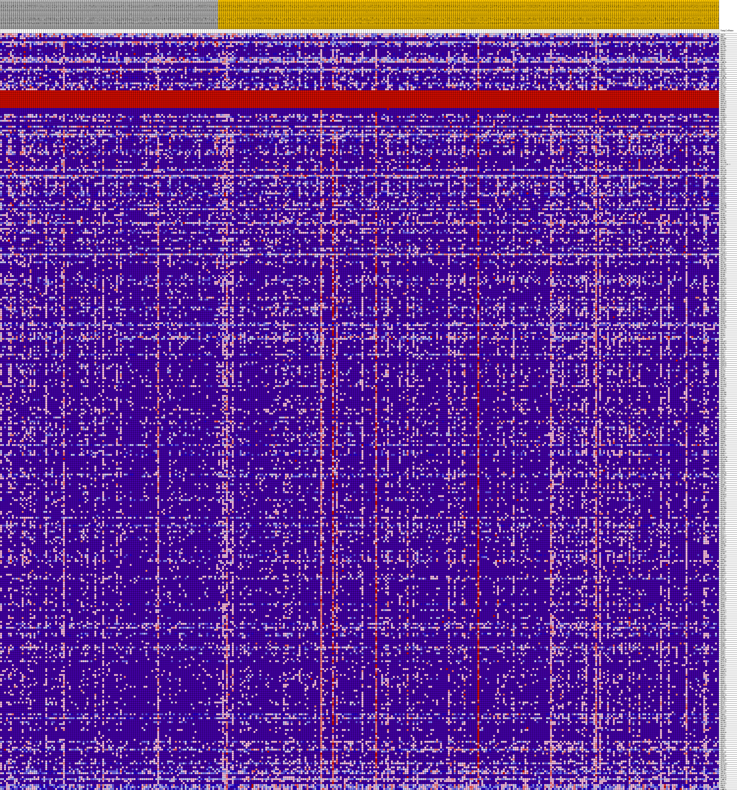
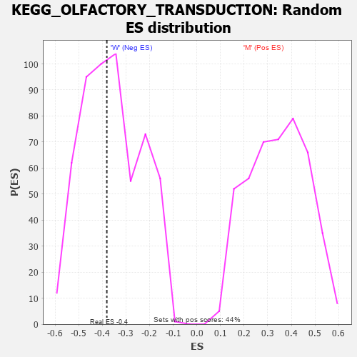

Profile of the Running ES Score & Positions of GeneSet Members on the Rank Ordered List
| Dataset | MUC16.MUC16.cls#M_versus_W.MUC16.cls#M_versus_W_repos |
| Phenotype | MUC16.cls#M_versus_W_repos |
| Upregulated in class | W |
| GeneSet | KEGG_OLFACTORY_TRANSDUCTION |
| Enrichment Score (ES) | -0.38090673 |
| Normalized Enrichment Score (NES) | -1.0611534 |
| Nominal p-value | 0.46057346 |
| FDR q-value | 1.0 |
| FWER p-Value | 0.995 |
| PROBE | DESCRIPTION (from dataset) | GENE SYMBOL | GENE_TITLE | RANK IN GENE LIST | RANK METRIC SCORE | RUNNING ES | CORE ENRICHMENT | |
|---|---|---|---|---|---|---|---|---|
| 1 | ADCY3 | na | 2317 | 0.109 | -0.0386 | No | ||
| 2 | PRKX | na | 2534 | 0.105 | -0.0391 | No | ||
| 3 | OR51B4 | na | 2747 | 0.101 | -0.0397 | No | ||
| 4 | OR8K5 | na | 3108 | 0.094 | -0.0432 | No | ||
| 5 | CALM3 | na | 3186 | 0.093 | -0.0415 | No | ||
| 6 | OR2B6 | na | 4463 | 0.076 | -0.0623 | No | ||
| 7 | OR51B5 | na | 4654 | 0.073 | -0.0634 | No | ||
| 8 | OR2T5 | na | 4771 | 0.072 | -0.0631 | No | ||
| 9 | OR5AU1 | na | 4936 | 0.070 | -0.0638 | No | ||
| 10 | OR5T1 | na | 4982 | 0.069 | -0.0624 | No | ||
| 11 | OR4C6 | na | 5327 | 0.066 | -0.0665 | No | ||
| 12 | OR5T3 | na | 6219 | 0.056 | -0.0809 | No | ||
| 13 | CNGA4 | na | 6282 | 0.056 | -0.0802 | No | ||
| 14 | OR2A7 | na | 7020 | 0.049 | -0.0920 | No | ||
| 15 | CAMK2D | na | 7028 | 0.049 | -0.0905 | No | ||
| 16 | OR5T2 | na | 7047 | 0.049 | -0.0892 | No | ||
| 17 | OR2T4 | na | 7120 | 0.048 | -0.0890 | No | ||
| 18 | OR56A3 | na | 7289 | 0.047 | -0.0905 | No | ||
| 19 | ARRB2 | na | 8711 | 0.035 | -0.1153 | No | ||
| 20 | OR2W3 | na | 9227 | 0.031 | -0.1236 | No | ||
| 21 | OR2T10 | na | 10111 | 0.024 | -0.1389 | No | ||
| 22 | OR2M4 | na | 11121 | 0.017 | -0.1568 | No | ||
| 23 | CAMK2B | na | 11529 | 0.014 | -0.1637 | No | ||
| 24 | OR2T8 | na | 11764 | 0.013 | -0.1676 | No | ||
| 25 | OR5J2 | na | 11894 | 0.012 | -0.1695 | No | ||
| 26 | GUCA1A | na | 12487 | 0.008 | -0.1801 | No | ||
| 27 | OR1Q1 | na | 12749 | 0.006 | -0.1846 | No | ||
| 28 | OR13H1 | na | 13194 | 0.003 | -0.1926 | No | ||
| 29 | OR2A12 | na | 13722 | 0.000 | -0.2022 | No | ||
| 30 | OR2L8 | na | 14561 | 0.000 | -0.2175 | No | ||
| 31 | OR4X1 | na | 14581 | 0.000 | -0.2178 | No | ||
| 32 | OR5H6 | na | 14588 | 0.000 | -0.2179 | No | ||
| 33 | OR5R1 | na | 14605 | 0.000 | -0.2182 | No | ||
| 34 | OR8K3 | na | 14640 | 0.000 | -0.2188 | No | ||
| 35 | OR4C16 | na | 14725 | 0.000 | -0.2204 | No | ||
| 36 | OR52R1 | na | 14828 | 0.000 | -0.2222 | No | ||
| 37 | OR10X1 | na | 14957 | 0.000 | -0.2246 | No | ||
| 38 | OR5D13 | na | 14978 | 0.000 | -0.2249 | No | ||
| 39 | OR4N4 | na | 15135 | -0.001 | -0.2278 | No | ||
| 40 | OR4M2 | na | 15579 | -0.003 | -0.2357 | No | ||
| 41 | OR1S1 | na | 15612 | -0.003 | -0.2362 | No | ||
| 42 | OR5B21 | na | 15677 | -0.003 | -0.2373 | No | ||
| 43 | CALML6 | na | 16160 | -0.006 | -0.2459 | No | ||
| 44 | OR2M3 | na | 16241 | -0.006 | -0.2471 | No | ||
| 45 | OR2D3 | na | 16739 | -0.009 | -0.2559 | No | ||
| 46 | OR2T11 | na | 16854 | -0.010 | -0.2576 | No | ||
| 47 | OR51A2 | na | 16891 | -0.010 | -0.2580 | No | ||
| 48 | GRK3 | na | 17646 | -0.014 | -0.2713 | No | ||
| 49 | OR4A15 | na | 17803 | -0.015 | -0.2736 | No | ||
| 50 | OR2AG2 | na | 18072 | -0.016 | -0.2780 | No | ||
| 51 | OR6C75 | na | 18327 | -0.017 | -0.2821 | No | ||
| 52 | CALM1 | na | 18494 | -0.018 | -0.2845 | No | ||
| 53 | OR1J4 | na | 18616 | -0.019 | -0.2861 | No | ||
| 54 | OR8D1 | na | 18955 | -0.020 | -0.2916 | No | ||
| 55 | OR2C3 | na | 19165 | -0.021 | -0.2947 | No | ||
| 56 | OR8A1 | na | 19174 | -0.021 | -0.2941 | No | ||
| 57 | OR5AN1 | na | 19286 | -0.022 | -0.2954 | No | ||
| 58 | OR9A4 | na | 19388 | -0.022 | -0.2966 | No | ||
| 59 | OR52E6 | na | 19469 | -0.023 | -0.2973 | No | ||
| 60 | OR3A2 | na | 19484 | -0.023 | -0.2968 | No | ||
| 61 | OR1J1 | na | 19628 | -0.023 | -0.2986 | No | ||
| 62 | OR1J2 | na | 19736 | -0.024 | -0.2998 | No | ||
| 63 | OR2F1 | na | 19739 | -0.024 | -0.2990 | No | ||
| 64 | CLCA1 | na | 19952 | -0.025 | -0.3021 | No | ||
| 65 | OR2AG1 | na | 20112 | -0.026 | -0.3041 | No | ||
| 66 | OR2AT4 | na | 20377 | -0.027 | -0.3081 | No | ||
| 67 | AL512310.1 | na | 20593 | -0.028 | -0.3111 | No | ||
| 68 | OR51A7 | na | 20790 | -0.029 | -0.3137 | No | ||
| 69 | OR1D5 | na | 21005 | -0.030 | -0.3166 | No | ||
| 70 | GUCA1B | na | 21020 | -0.030 | -0.3159 | No | ||
| 71 | OR2T33 | na | 21158 | -0.030 | -0.3174 | No | ||
| 72 | OR10A6 | na | 21214 | -0.031 | -0.3174 | No | ||
| 73 | CALM2 | na | 21545 | -0.032 | -0.3224 | No | ||
| 74 | OR56B4 | na | 21804 | -0.033 | -0.3260 | No | ||
| 75 | OR4F4 | na | 21854 | -0.033 | -0.3258 | No | ||
| 76 | OR10J3 | na | 21926 | -0.034 | -0.3260 | No | ||
| 77 | OR7C1 | na | 21965 | -0.034 | -0.3256 | No | ||
| 78 | OR10Q1 | na | 22016 | -0.034 | -0.3254 | No | ||
| 79 | OR10J5 | na | 22034 | -0.034 | -0.3246 | No | ||
| 80 | OR52E2 | na | 22192 | -0.035 | -0.3263 | No | ||
| 81 | OR2G3 | na | 22350 | -0.035 | -0.3280 | No | ||
| 82 | OR13A1 | na | 22490 | -0.036 | -0.3293 | No | ||
| 83 | OR7D2 | na | 22532 | -0.036 | -0.3289 | No | ||
| 84 | CALML5 | na | 22650 | -0.037 | -0.3298 | No | ||
| 85 | OR2A2 | na | 23141 | -0.039 | -0.3375 | No | ||
| 86 | OR1L4 | na | 23183 | -0.039 | -0.3369 | No | ||
| 87 | OR6C65 | na | 23495 | -0.040 | -0.3413 | No | ||
| 88 | OR52N4 | na | 23545 | -0.040 | -0.3409 | No | ||
| 89 | OR5D18 | na | 23891 | -0.042 | -0.3458 | No | ||
| 90 | PRKG2 | na | 23981 | -0.042 | -0.3460 | No | ||
| 91 | OR2T29 | na | 24031 | -0.042 | -0.3455 | No | ||
| 92 | OR1N1 | na | 24284 | -0.043 | -0.3487 | No | ||
| 93 | OR2B11 | na | 24347 | -0.044 | -0.3484 | No | ||
| 94 | OR5M8 | na | 24692 | -0.045 | -0.3532 | No | ||
| 95 | OR10K2 | na | 25210 | -0.047 | -0.3611 | No | ||
| 96 | OR2A42 | na | 25427 | -0.048 | -0.3634 | No | ||
| 97 | PRKACB | na | 25430 | -0.048 | -0.3619 | No | ||
| 98 | OR3A1 | na | 25587 | -0.048 | -0.3632 | No | ||
| 99 | OR51F1 | na | 25745 | -0.049 | -0.3644 | No | ||
| 100 | OR6V1 | na | 25748 | -0.049 | -0.3629 | No | ||
| 101 | OR12D3 | na | 26096 | -0.050 | -0.3675 | No | ||
| 102 | OR10A4 | na | 26110 | -0.050 | -0.3661 | No | ||
| 103 | OR5M3 | na | 26196 | -0.051 | -0.3660 | No | ||
| 104 | OR10H4 | na | 26476 | -0.052 | -0.3694 | No | ||
| 105 | OR6B2 | na | 26792 | -0.053 | -0.3734 | No | ||
| 106 | OR5M11 | na | 26899 | -0.053 | -0.3736 | No | ||
| 107 | OR4A47 | na | 27024 | -0.054 | -0.3741 | No | ||
| 108 | OR10K1 | na | 27196 | -0.054 | -0.3754 | No | ||
| 109 | CLCA2 | na | 27233 | -0.055 | -0.3743 | No | ||
| 110 | OR13J1 | na | 27260 | -0.055 | -0.3730 | No | ||
| 111 | OR1A1 | na | 27358 | -0.055 | -0.3730 | No | ||
| 112 | CALML3 | na | 27409 | -0.055 | -0.3721 | No | ||
| 113 | PRKACA | na | 27466 | -0.055 | -0.3713 | No | ||
| 114 | OR7G3 | na | 27539 | -0.056 | -0.3708 | No | ||
| 115 | OR52E4 | na | 27557 | -0.056 | -0.3693 | No | ||
| 116 | OR51I1 | na | 27719 | -0.056 | -0.3704 | No | ||
| 117 | OR2B2 | na | 27899 | -0.057 | -0.3718 | No | ||
| 118 | OR52N1 | na | 27911 | -0.057 | -0.3701 | No | ||
| 119 | OR51B2 | na | 27912 | -0.057 | -0.3682 | No | ||
| 120 | OR6C76 | na | 27948 | -0.057 | -0.3670 | No | ||
| 121 | OR10R2 | na | 28052 | -0.057 | -0.3670 | No | ||
| 122 | OR10C1 | na | 28133 | -0.058 | -0.3666 | No | ||
| 123 | OR2M5 | na | 28215 | -0.058 | -0.3661 | No | ||
| 124 | OR1N2 | na | 28322 | -0.058 | -0.3662 | No | ||
| 125 | OR14I1 | na | 28326 | -0.058 | -0.3643 | No | ||
| 126 | OR52B2 | na | 28597 | -0.059 | -0.3673 | No | ||
| 127 | OR8B12 | na | 28695 | -0.060 | -0.3671 | No | ||
| 128 | OR52N2 | na | 28796 | -0.060 | -0.3670 | No | ||
| 129 | OR2V2 | na | 28827 | -0.060 | -0.3655 | No | ||
| 130 | OR12D2 | na | 28941 | -0.060 | -0.3656 | No | ||
| 131 | OR5K1 | na | 28942 | -0.060 | -0.3636 | No | ||
| 132 | OR5AC2 | na | 28992 | -0.061 | -0.3625 | No | ||
| 133 | OR4F15 | na | 29070 | -0.061 | -0.3619 | No | ||
| 134 | OR8H3 | na | 29101 | -0.061 | -0.3605 | No | ||
| 135 | OR2A14 | na | 29275 | -0.062 | -0.3616 | No | ||
| 136 | OR2Z1 | na | 29326 | -0.062 | -0.3605 | No | ||
| 137 | OR10G7 | na | 29366 | -0.062 | -0.3592 | No | ||
| 138 | OR10G3 | na | 29519 | -0.062 | -0.3599 | No | ||
| 139 | OR10S1 | na | 29537 | -0.063 | -0.3582 | No | ||
| 140 | OR10A2 | na | 29617 | -0.063 | -0.3576 | No | ||
| 141 | OR11H4 | na | 29658 | -0.063 | -0.3562 | No | ||
| 142 | OR4D5 | na | 29739 | -0.063 | -0.3556 | No | ||
| 143 | OR2T3 | na | 30238 | -0.065 | -0.3626 | No | ||
| 144 | OR10G2 | na | 30513 | -0.066 | -0.3654 | No | ||
| 145 | OR6Q1 | na | 30943 | -0.067 | -0.3711 | No | ||
| 146 | OR8G1 | na | 30956 | -0.067 | -0.3691 | No | ||
| 147 | OR5D16 | na | 31162 | -0.068 | -0.3706 | No | ||
| 148 | OR2H2 | na | 31486 | -0.069 | -0.3742 | No | ||
| 149 | OR51E1 | na | 31824 | -0.070 | -0.3781 | No | ||
| 150 | OR13C8 | na | 31871 | -0.070 | -0.3767 | No | ||
| 151 | OR6A2 | na | 32015 | -0.070 | -0.3770 | No | ||
| 152 | OR2T1 | na | 32071 | -0.070 | -0.3757 | No | ||
| 153 | OR5C1 | na | 32360 | -0.071 | -0.3786 | Yes | ||
| 154 | OR2B3 | na | 32403 | -0.072 | -0.3770 | Yes | ||
| 155 | OR2A1 | na | 32461 | -0.072 | -0.3757 | Yes | ||
| 156 | PDC | na | 32600 | -0.072 | -0.3758 | Yes | ||
| 157 | OR5AP2 | na | 32627 | -0.072 | -0.3739 | Yes | ||
| 158 | OR4K13 | na | 32842 | -0.073 | -0.3755 | Yes | ||
| 159 | OR2T6 | na | 32976 | -0.073 | -0.3755 | Yes | ||
| 160 | OR51Q1 | na | 33074 | -0.074 | -0.3748 | Yes | ||
| 161 | OR4C13 | na | 33241 | -0.074 | -0.3754 | Yes | ||
| 162 | OR2G2 | na | 33325 | -0.075 | -0.3745 | Yes | ||
| 163 | OR4L1 | na | 33358 | -0.075 | -0.3726 | Yes | ||
| 164 | OR2C1 | na | 33410 | -0.075 | -0.3711 | Yes | ||
| 165 | OR5H2 | na | 33432 | -0.075 | -0.3690 | Yes | ||
| 166 | OR52L1 | na | 33574 | -0.075 | -0.3691 | Yes | ||
| 167 | OR4F3 | na | 33611 | -0.076 | -0.3673 | Yes | ||
| 168 | OR4C45 | na | 33620 | -0.076 | -0.3650 | Yes | ||
| 169 | OR4D10 | na | 33657 | -0.076 | -0.3632 | Yes | ||
| 170 | OR51V1 | na | 33744 | -0.076 | -0.3622 | Yes | ||
| 171 | OR1C1 | na | 33762 | -0.076 | -0.3601 | Yes | ||
| 172 | OR7D4 | na | 33782 | -0.076 | -0.3579 | Yes | ||
| 173 | OR1A2 | na | 33815 | -0.076 | -0.3560 | Yes | ||
| 174 | OR2M7 | na | 33934 | -0.077 | -0.3557 | Yes | ||
| 175 | OR8D2 | na | 34037 | -0.077 | -0.3550 | Yes | ||
| 176 | OR52M1 | na | 34049 | -0.077 | -0.3527 | Yes | ||
| 177 | OR1D4 | na | 34062 | -0.077 | -0.3504 | Yes | ||
| 178 | OR11L1 | na | 34296 | -0.078 | -0.3521 | Yes | ||
| 179 | OR10G8 | na | 34467 | -0.078 | -0.3526 | Yes | ||
| 180 | OR10A5 | na | 34488 | -0.078 | -0.3504 | Yes | ||
| 181 | OR5L1 | na | 34613 | -0.079 | -0.3501 | Yes | ||
| 182 | OR6K2 | na | 34615 | -0.079 | -0.3476 | Yes | ||
| 183 | OR51B6 | na | 34655 | -0.079 | -0.3457 | Yes | ||
| 184 | OR52B4 | na | 34712 | -0.079 | -0.3441 | Yes | ||
| 185 | OR10A7 | na | 34802 | -0.079 | -0.3432 | Yes | ||
| 186 | OR2L2 | na | 34914 | -0.079 | -0.3426 | Yes | ||
| 187 | OR4N2 | na | 34960 | -0.080 | -0.3408 | Yes | ||
| 188 | OR51T1 | na | 35007 | -0.080 | -0.3390 | Yes | ||
| 189 | OR2S2 | na | 35020 | -0.080 | -0.3366 | Yes | ||
| 190 | OR4F17 | na | 35021 | -0.080 | -0.3340 | Yes | ||
| 191 | OR10AG1 | na | 35029 | -0.080 | -0.3316 | Yes | ||
| 192 | OR2D2 | na | 35071 | -0.080 | -0.3297 | Yes | ||
| 193 | OR10H3 | na | 35137 | -0.080 | -0.3282 | Yes | ||
| 194 | OR2A5 | na | 35256 | -0.080 | -0.3278 | Yes | ||
| 195 | OR10G4 | na | 35388 | -0.081 | -0.3275 | Yes | ||
| 196 | OR2G6 | na | 35444 | -0.081 | -0.3259 | Yes | ||
| 197 | OR4A16 | na | 35682 | -0.082 | -0.3275 | Yes | ||
| 198 | OR8G5 | na | 35707 | -0.082 | -0.3253 | Yes | ||
| 199 | OR2A25 | na | 35730 | -0.082 | -0.3230 | Yes | ||
| 200 | OR10J1 | na | 35859 | -0.082 | -0.3226 | Yes | ||
| 201 | OR10P1 | na | 35891 | -0.082 | -0.3205 | Yes | ||
| 202 | OR5A1 | na | 35926 | -0.082 | -0.3184 | Yes | ||
| 203 | OR6N1 | na | 35937 | -0.083 | -0.3159 | Yes | ||
| 204 | OR6T1 | na | 36100 | -0.083 | -0.3161 | Yes | ||
| 205 | OR56B1 | na | 36117 | -0.083 | -0.3137 | Yes | ||
| 206 | OR8B8 | na | 36118 | -0.083 | -0.3110 | Yes | ||
| 207 | OR51F2 | na | 36247 | -0.083 | -0.3106 | Yes | ||
| 208 | OR8D4 | na | 36336 | -0.084 | -0.3094 | Yes | ||
| 209 | OR6C3 | na | 36387 | -0.084 | -0.3076 | Yes | ||
| 210 | GUCY2D | na | 36412 | -0.084 | -0.3053 | Yes | ||
| 211 | OR9I1 | na | 36436 | -0.084 | -0.3030 | Yes | ||
| 212 | OR5B17 | na | 36440 | -0.084 | -0.3003 | Yes | ||
| 213 | OR1M1 | na | 36467 | -0.084 | -0.2980 | Yes | ||
| 214 | OR4D11 | na | 36470 | -0.084 | -0.2953 | Yes | ||
| 215 | OR1K1 | na | 36555 | -0.084 | -0.2940 | Yes | ||
| 216 | OR14C36 | na | 36590 | -0.085 | -0.2919 | Yes | ||
| 217 | OR51A4 | na | 36650 | -0.085 | -0.2902 | Yes | ||
| 218 | OR14A16 | na | 36713 | -0.085 | -0.2885 | Yes | ||
| 219 | OR6Y1 | na | 36740 | -0.085 | -0.2862 | Yes | ||
| 220 | OR4P4 | na | 36798 | -0.085 | -0.2845 | Yes | ||
| 221 | OR5M1 | na | 36994 | -0.086 | -0.2852 | Yes | ||
| 222 | OR3A3 | na | 37415 | -0.087 | -0.2900 | Yes | ||
| 223 | OR6C4 | na | 37554 | -0.088 | -0.2897 | Yes | ||
| 224 | OR8G2P | na | 37606 | -0.088 | -0.2877 | Yes | ||
| 225 | OR52B6 | na | 38015 | -0.089 | -0.2923 | Yes | ||
| 226 | OR6S1 | na | 38038 | -0.089 | -0.2897 | Yes | ||
| 227 | OR52K1 | na | 38053 | -0.089 | -0.2871 | Yes | ||
| 228 | OR5I1 | na | 38112 | -0.089 | -0.2852 | Yes | ||
| 229 | OR11H1 | na | 38182 | -0.089 | -0.2835 | Yes | ||
| 230 | OR6M1 | na | 38198 | -0.089 | -0.2809 | Yes | ||
| 231 | OR4C12 | na | 38237 | -0.090 | -0.2787 | Yes | ||
| 232 | OR11H6 | na | 38271 | -0.090 | -0.2763 | Yes | ||
| 233 | OR51G1 | na | 38437 | -0.090 | -0.2764 | Yes | ||
| 234 | OR7G1 | na | 38464 | -0.090 | -0.2739 | Yes | ||
| 235 | OR5M10 | na | 38581 | -0.091 | -0.2730 | Yes | ||
| 236 | OR13G1 | na | 38604 | -0.091 | -0.2704 | Yes | ||
| 237 | OR2F2 | na | 38623 | -0.091 | -0.2678 | Yes | ||
| 238 | OR1F1 | na | 38895 | -0.092 | -0.2697 | Yes | ||
| 239 | OR13C4 | na | 38945 | -0.092 | -0.2676 | Yes | ||
| 240 | OR10T2 | na | 39253 | -0.093 | -0.2702 | Yes | ||
| 241 | OR14J1 | na | 39437 | -0.094 | -0.2704 | Yes | ||
| 242 | OR52E8 | na | 39477 | -0.094 | -0.2681 | Yes | ||
| 243 | OR2J3 | na | 39505 | -0.094 | -0.2655 | Yes | ||
| 244 | OR7A17 | na | 39618 | -0.094 | -0.2644 | Yes | ||
| 245 | OR1B1 | na | 39634 | -0.094 | -0.2616 | Yes | ||
| 246 | CLCA4 | na | 39642 | -0.094 | -0.2587 | Yes | ||
| 247 | OR2A4 | na | 39726 | -0.095 | -0.2571 | Yes | ||
| 248 | OR8B4 | na | 39730 | -0.095 | -0.2540 | Yes | ||
| 249 | OR1S2 | na | 39838 | -0.095 | -0.2529 | Yes | ||
| 250 | OR10H2 | na | 40184 | -0.096 | -0.2560 | Yes | ||
| 251 | OR7A5 | na | 40185 | -0.096 | -0.2529 | Yes | ||
| 252 | OR4D6 | na | 40327 | -0.097 | -0.2523 | Yes | ||
| 253 | OR2W1 | na | 40336 | -0.097 | -0.2493 | Yes | ||
| 254 | OR1L3 | na | 40340 | -0.097 | -0.2461 | Yes | ||
| 255 | OR1L1 | na | 40435 | -0.097 | -0.2447 | Yes | ||
| 256 | OR56A1 | na | 40470 | -0.097 | -0.2421 | Yes | ||
| 257 | OR4K2 | na | 40571 | -0.097 | -0.2408 | Yes | ||
| 258 | OR52I2 | na | 40586 | -0.098 | -0.2378 | Yes | ||
| 259 | OR4K14 | na | 40645 | -0.098 | -0.2357 | Yes | ||
| 260 | OR9G4 | na | 40698 | -0.098 | -0.2334 | Yes | ||
| 261 | OR51M1 | na | 40774 | -0.098 | -0.2316 | Yes | ||
| 262 | OR8I2 | na | 40807 | -0.098 | -0.2289 | Yes | ||
| 263 | OR4E2 | na | 40979 | -0.099 | -0.2288 | Yes | ||
| 264 | OR56A5 | na | 41074 | -0.099 | -0.2273 | Yes | ||
| 265 | OR2M2 | na | 41087 | -0.099 | -0.2242 | Yes | ||
| 266 | OR11A1 | na | 41102 | -0.099 | -0.2212 | Yes | ||
| 267 | OR11G2 | na | 41130 | -0.099 | -0.2185 | Yes | ||
| 268 | OR9Q2 | na | 41244 | -0.100 | -0.2173 | Yes | ||
| 269 | OR52H1 | na | 41254 | -0.100 | -0.2142 | Yes | ||
| 270 | OR6C2 | na | 41271 | -0.100 | -0.2112 | Yes | ||
| 271 | OR13C3 | na | 41403 | -0.100 | -0.2103 | Yes | ||
| 272 | OR1D2 | na | 41440 | -0.101 | -0.2076 | Yes | ||
| 273 | OR4F6 | na | 41591 | -0.101 | -0.2071 | Yes | ||
| 274 | OR4F5 | na | 41715 | -0.102 | -0.2060 | Yes | ||
| 275 | OR5AS1 | na | 41754 | -0.102 | -0.2033 | Yes | ||
| 276 | OR4C3 | na | 41767 | -0.102 | -0.2002 | Yes | ||
| 277 | OR9A2 | na | 41784 | -0.102 | -0.1972 | Yes | ||
| 278 | OR2L13 | na | 41899 | -0.102 | -0.1959 | Yes | ||
| 279 | OR6N2 | na | 41945 | -0.102 | -0.1934 | Yes | ||
| 280 | OR52J3 | na | 42127 | -0.103 | -0.1933 | Yes | ||
| 281 | OR5L2 | na | 42233 | -0.103 | -0.1919 | Yes | ||
| 282 | OR6C6 | na | 42250 | -0.103 | -0.1888 | Yes | ||
| 283 | OR4D9 | na | 42373 | -0.104 | -0.1876 | Yes | ||
| 284 | OR6B1 | na | 42602 | -0.105 | -0.1883 | Yes | ||
| 285 | OR2T34 | na | 42683 | -0.105 | -0.1863 | Yes | ||
| 286 | OR4K5 | na | 42697 | -0.105 | -0.1831 | Yes | ||
| 287 | OR10Z1 | na | 42710 | -0.105 | -0.1799 | Yes | ||
| 288 | OR4C46 | na | 42718 | -0.105 | -0.1766 | Yes | ||
| 289 | OR2T12 | na | 42777 | -0.105 | -0.1742 | Yes | ||
| 290 | OR4B1 | na | 42848 | -0.106 | -0.1720 | Yes | ||
| 291 | OR9Q1 | na | 42862 | -0.106 | -0.1688 | Yes | ||
| 292 | OR8H1 | na | 42864 | -0.106 | -0.1654 | Yes | ||
| 293 | OR2T2 | na | 42893 | -0.106 | -0.1624 | Yes | ||
| 294 | OR5B12 | na | 43068 | -0.106 | -0.1621 | Yes | ||
| 295 | OR13C2 | na | 43134 | -0.107 | -0.1598 | Yes | ||
| 296 | OR4S2 | na | 43188 | -0.107 | -0.1573 | Yes | ||
| 297 | OR51G2 | na | 43202 | -0.107 | -0.1540 | Yes | ||
| 298 | OR10V1 | na | 43296 | -0.107 | -0.1522 | Yes | ||
| 299 | OR5B3 | na | 43419 | -0.108 | -0.1509 | Yes | ||
| 300 | OR8J1 | na | 43425 | -0.108 | -0.1475 | Yes | ||
| 301 | OR2AE1 | na | 43497 | -0.108 | -0.1452 | Yes | ||
| 302 | OR5V1 | na | 43688 | -0.109 | -0.1452 | Yes | ||
| 303 | OR1L8 | na | 43749 | -0.109 | -0.1427 | Yes | ||
| 304 | OR52N5 | na | 43762 | -0.109 | -0.1393 | Yes | ||
| 305 | OR6F1 | na | 43773 | -0.109 | -0.1360 | Yes | ||
| 306 | OR2H1 | na | 43832 | -0.109 | -0.1334 | Yes | ||
| 307 | OR7G2 | na | 43912 | -0.109 | -0.1313 | Yes | ||
| 308 | OR5F1 | na | 43946 | -0.109 | -0.1283 | Yes | ||
| 309 | OR10G9 | na | 44097 | -0.110 | -0.1275 | Yes | ||
| 310 | OR5A2 | na | 44206 | -0.110 | -0.1258 | Yes | ||
| 311 | OR6B3 | na | 44365 | -0.111 | -0.1250 | Yes | ||
| 312 | OR8H2 | na | 44638 | -0.112 | -0.1263 | Yes | ||
| 313 | OR52W1 | na | 44700 | -0.112 | -0.1238 | Yes | ||
| 314 | OR1G1 | na | 44795 | -0.113 | -0.1218 | Yes | ||
| 315 | OR4K1 | na | 44916 | -0.113 | -0.1203 | Yes | ||
| 316 | OR4D1 | na | 44939 | -0.113 | -0.1170 | Yes | ||
| 317 | OR2J2 | na | 45086 | -0.114 | -0.1159 | Yes | ||
| 318 | OR4M1 | na | 45105 | -0.114 | -0.1125 | Yes | ||
| 319 | OR6C74 | na | 45216 | -0.114 | -0.1108 | Yes | ||
| 320 | OR7E24 | na | 45357 | -0.115 | -0.1096 | Yes | ||
| 321 | OR2L3 | na | 45372 | -0.115 | -0.1060 | Yes | ||
| 322 | OR4K17 | na | 45404 | -0.115 | -0.1028 | Yes | ||
| 323 | OR6C1 | na | 45668 | -0.116 | -0.1038 | Yes | ||
| 324 | OR5AK2 | na | 45869 | -0.117 | -0.1036 | Yes | ||
| 325 | OR4K15 | na | 45999 | -0.118 | -0.1021 | Yes | ||
| 326 | OR8J3 | na | 46181 | -0.118 | -0.1016 | Yes | ||
| 327 | OR51I2 | na | 46213 | -0.119 | -0.0983 | Yes | ||
| 328 | OR5P2 | na | 46249 | -0.119 | -0.0950 | Yes | ||
| 329 | OR7C2 | na | 46563 | -0.120 | -0.0968 | Yes | ||
| 330 | OR8K1 | na | 46658 | -0.121 | -0.0945 | Yes | ||
| 331 | OR6K3 | na | 46758 | -0.121 | -0.0924 | Yes | ||
| 332 | OR52A5 | na | 46799 | -0.121 | -0.0891 | Yes | ||
| 333 | OR52D1 | na | 46836 | -0.122 | -0.0858 | Yes | ||
| 334 | OR13C9 | na | 46869 | -0.122 | -0.0824 | Yes | ||
| 335 | OR4X2 | na | 46898 | -0.122 | -0.0789 | Yes | ||
| 336 | OR9G1 | na | 46933 | -0.122 | -0.0755 | Yes | ||
| 337 | OR6C70 | na | 47009 | -0.122 | -0.0729 | Yes | ||
| 338 | OR4N5 | na | 47051 | -0.123 | -0.0696 | Yes | ||
| 339 | OR13F1 | na | 47056 | -0.123 | -0.0657 | Yes | ||
| 340 | OR51L1 | na | 47063 | -0.123 | -0.0618 | Yes | ||
| 341 | OR1E1 | na | 47082 | -0.123 | -0.0581 | Yes | ||
| 342 | OR2Y1 | na | 47133 | -0.123 | -0.0550 | Yes | ||
| 343 | OR4C11 | na | 47139 | -0.123 | -0.0510 | Yes | ||
| 344 | OR6X1 | na | 47176 | -0.123 | -0.0477 | Yes | ||
| 345 | OR7A10 | na | 47353 | -0.124 | -0.0468 | Yes | ||
| 346 | OR2T27 | na | 47429 | -0.125 | -0.0441 | Yes | ||
| 347 | CNGB1 | na | 47533 | -0.125 | -0.0419 | Yes | ||
| 348 | OR51D1 | na | 47573 | -0.125 | -0.0385 | Yes | ||
| 349 | PRKACG | na | 47650 | -0.126 | -0.0358 | Yes | ||
| 350 | OR5M9 | na | 47846 | -0.127 | -0.0352 | Yes | ||
| 351 | OR13D1 | na | 47874 | -0.127 | -0.0315 | Yes | ||
| 352 | OR52A1 | na | 47918 | -0.127 | -0.0281 | Yes | ||
| 353 | OR5AR1 | na | 48007 | -0.127 | -0.0256 | Yes | ||
| 354 | OR4S1 | na | 48082 | -0.128 | -0.0227 | Yes | ||
| 355 | OR1E2 | na | 48103 | -0.128 | -0.0189 | Yes | ||
| 356 | OR5D14 | na | 48129 | -0.128 | -0.0152 | Yes | ||
| 357 | OR4A5 | na | 48158 | -0.128 | -0.0115 | Yes | ||
| 358 | OR6K6 | na | 48166 | -0.128 | -0.0074 | Yes | ||
| 359 | OR8U1 | na | 48315 | -0.129 | -0.0059 | Yes | ||
| 360 | OR51S1 | na | 48867 | -0.132 | -0.0116 | Yes | ||
| 361 | OR5K2 | na | 48884 | -0.132 | -0.0075 | Yes | ||
| 362 | OR1I1 | na | 49053 | -0.133 | -0.0062 | Yes | ||
| 363 | OR5P3 | na | 49487 | -0.136 | -0.0097 | Yes | ||
| 364 | OR52I1 | na | 49650 | -0.137 | -0.0081 | Yes | ||
| 365 | GNAL | na | 49655 | -0.137 | -0.0037 | Yes | ||
| 366 | GUCA1C | na | 49694 | -0.138 | 0.0001 | Yes | ||
| 367 | OR4D2 | na | 49930 | -0.139 | 0.0004 | Yes | ||
| 368 | OR6C68 | na | 49951 | -0.139 | 0.0046 | Yes | ||
| 369 | OR9K2 | na | 50039 | -0.140 | 0.0076 | Yes | ||
| 370 | OR56A4 | na | 50092 | -0.140 | 0.0112 | Yes | ||
| 371 | OR2K2 | na | 50119 | -0.140 | 0.0153 | Yes | ||
| 372 | OR10AD1 | na | 50493 | -0.143 | 0.0132 | Yes | ||
| 373 | OR2AK2 | na | 50641 | -0.144 | 0.0153 | Yes | ||
| 374 | OR52K2 | na | 50895 | -0.146 | 0.0155 | Yes | ||
| 375 | OR10H5 | na | 50904 | -0.146 | 0.0201 | Yes | ||
| 376 | CNGA3 | na | 51770 | -0.154 | 0.0094 | Yes | ||
| 377 | OR51E2 | na | 52120 | -0.158 | 0.0082 | Yes | ||
| 378 | OR4C15 | na | 52210 | -0.159 | 0.0118 | Yes | ||
| 379 | OR10A3 | na | 52399 | -0.162 | 0.0137 | Yes | ||
| 380 | CAMK2G | na | 52501 | -0.163 | 0.0172 | Yes | ||
| 381 | OR1L6 | na | 52992 | -0.170 | 0.0138 | Yes | ||
| 382 | OR13C5 | na | 53014 | -0.170 | 0.0190 | Yes | ||
| 383 | PDE1C | na | 54303 | -0.200 | 0.0021 | Yes | ||
| 384 | PRKG1 | na | 54325 | -0.201 | 0.0083 | Yes | ||
| 385 | CAMK2A | na | 55224 | -0.271 | 0.0008 | Yes |

